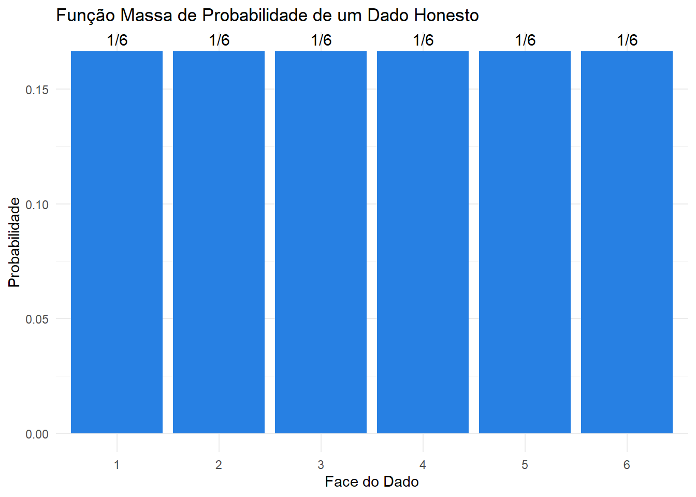
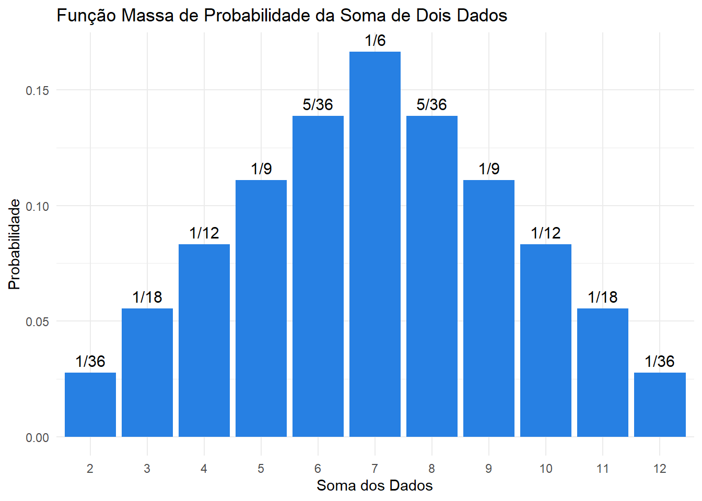
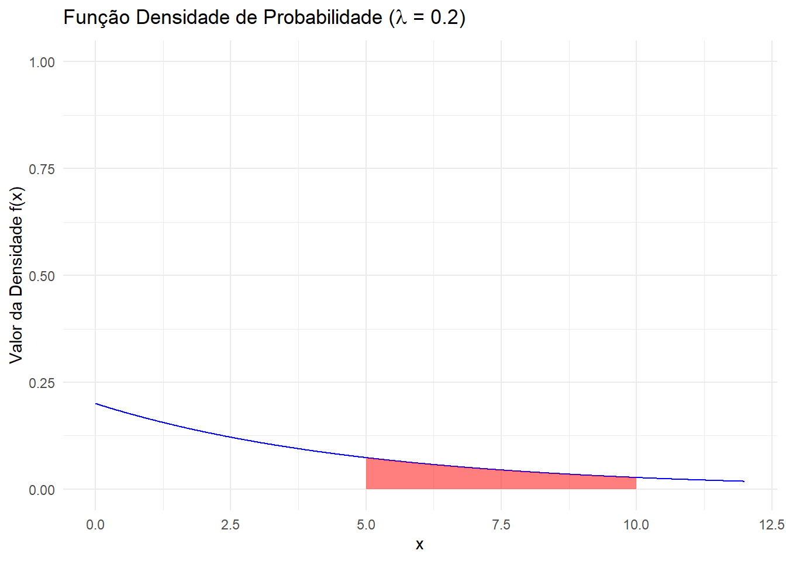

Informalmente, uma variável aleatória (V.A.) é um valor numérico do resultado de um experimento aleatório. Formalmente, abaixo segue a definição (Magalhães (2006), James (2023)):
Definição Seja \((\Omega, \mathcal{F}, \mathcal{P})\) um espaço de probabilidade. Denominamos de variável aleatória, qualquer função \(X : \Omega \rightarrow \mathbb{R}\) tal que \([X \le x]\) é evento aleatório para todo \(x \in \mathbb{R}\); isto é, \([X \le x] \in \mathcal{F}, \forall x \in \mathbb{R}\)1.
Exemplo (Mood, Graybill, e Boes (1974)) Assuma um experimento de lançar uma moeda honesta para cima. Defina a variável aleatória \(X\) assumir o valor \(1\) quando sair cara, e o valor \(0\) quando sair coroa. Ou seja:
\[
\begin{align*}
\Omega &= \{cara, coroa\} \\
X &=
\begin{cases}
1, & \text{ se $\omega$ = \{cara\},} \\
0, & \text{ se $\omega$ = \{coroa\}}
\end{cases}
\end{align*}
\]
Formalmente, precisamos mostrar que esta construção deste experimento \(X\) mostrando que \(\{\omega: X(\omega) \le x\}\) para todo \(x \in \mathbb{R}\) pertence à \(\mathcal{F}\). Primeiramente, note que \(\mathcal{F}\) é composto por quatro elementos sendo \(\{\emptyset, \Omega, \{cara\},\{coroa\}\}\). Agora, verificamos que se \(x < 0\), \(\{\omega: X(\omega) \le x\} = \emptyset\); e se \(0 \le x < 0\), \(\{\omega: X(\omega) \le x\} = \{cara\}\); e se \(x \ge 1\), \(\{\omega: X(\omega) \le x\} = \Omega = \{cara, coroa\}\). Então, pra cada \(x\) real o evento \(\{\omega: X(\omega) \le x\}\) pertence à \(\sigma\)-álgebra \(\mathcal{F}\) e, portanto, \(X\) é variável aleatória.
Exemplo (Mood, Graybill, e Boes (1974)) Assuma um experimento de lançar dois dados honestos de seis lados, sendo o dado \(i\) e o dado \(j\). Defina a variável aleatória \(X\) assumir o valor da soma das suas faces, ou seja, \(X(\omega) = i+j\), onde \(\Omega = \{(i,j): i,j = 1, 2,...,6\}\)
DefiniçãoFunção de Distribuição Acumulada (FDA) A FDA de uma V.A. \(X\) aplicada no ponto \(x\) denotada por \(F_X(x)\), é uma função com domínio nos números reais e imagem (contra domínio) no intervalo \([0,1]\) que satisfaz \(F_X(x) = P(X \le x), \forall x \in \mathbb{R}\).
A FDA é unicamente definida para cada variável aleatória. Ou seja, uma variável aleatória \(X\) possui uma única respectiva função \(F_X(.)\).
Para qualquer FDA de uma V.A. \(X\), tem-se as seguintes propriedades:
\(0 \le F_X(x) \le 1\)
\(F_X(x)\) é não decrescente. Isto é, se \(x_1 \le x_2 \implies F_X(x_1) \le F_X(x_2)\)
Um ponto interessante é que a definição de uma FDA poderia ser dada simplesmente por essas propriedades. Isto é, qualquer função \(F(.)\) que respeite as propriedades acima será FDA de alguma variável aleatória existente (mesmo sem mencioná-la!).
Funções Densidade
A FDA vista anteriormente possui uma definição genérica podendo englobar todo o tipo de variável aleatória. No entanto, os valoes específicos da sua distribuição podem também ser descritos através da função de densidade de probabilidade. Para isso, vamos considerar o caso de variáveis discretas e contínuas.
Variáveis Aleatórias Discretas
Definição Se os valores considerados de \(X\) são contáveis, então \(X\) é considerado discreto.
Note que se \(X\) é contável assumindo, por exemplo, valores \(x_1, x_2, ..., x_n, ...\), então \(\Omega = \bigcup\limits_{i=1}^{\infty} \{X = x_n\}\), mas como os \(x_i\)’s podem ser vistos como eventos disjuntos, isto é, \(\{X = x_i\} \cap \{X = x_j\} = \emptyset, \forall i \ne j\); então, \(1 = P(\Omega) = \sum\limits_{i=1}^{\infty}P(X = x_i)\) pelo terceiro axioma de Kolmogorov.
A função densidade de probabilidade, \(f_X(.)\) é definida como sendo
A função densidade de probabilidade de uma VA discreta também pode ser chamada de função massa de probabilidade.
Exemplo Função de densidade do lançamento de um dado honesto sendo \(X\) definido como sendo o valor da face.
Mostrar Código
# Carregar o pacote ggplot2library(ggplot2)# Dados: resultados do dado e suas probabilidadesdados <-data.frame(face =1:6,probabilidade =rep(1/6, 6),fracoes ='1/6')# Criar o gráfico de barrasggplot(dados, aes(x =factor(face), y = probabilidade)) +geom_bar(stat ="identity", fill ="#2780e3") +geom_text(aes(label = fracoes), vjust =-0.5, size =4) +labs(title ="Função Massa de Probabilidade de um Dado Honesto",x ="Face do Dado",y ="Probabilidade") +theme_minimal()

Observe que, neste caso, a FDA pode ser visualizada abaixo:
Mostrar Código
# Código inspirado em https://stackoverflow.com/questions/52236576/r-ggplot-make-geom-step-jumps-dashed# Carregar as bibliotecas necessáriaslibrary(ggplot2)library(dplyr)dados <- tibble::tibble(x =0:6,probabilidade =c(0, rep(1/6, 6)),fda =cumsum(probabilidade))dados_grafico <- dados %>%mutate(tipo ="fda") %>%bind_rows(dados %>%mutate(tipo ="previa_fda",fda =lag(fda))) %>% tidyr::drop_na() %>%arrange(x, desc(tipo))ggplot(dados_grafico) +geom_segment(aes(x =lag(x), y =lag(fda), xend = x, yend = fda, lty = tipo)) +geom_point(data =slice(dados_grafico, -1), aes(x, fda, fill = tipo), shape =21) +# Retira ponto mais extremo para ilustrar o -infinitoscale_fill_manual(values =c("black", "white")) +scale_linetype_manual(values =c("dashed", "solid")) +labs(title ="FDA teórica de um dado honesto (6 faces)",x ="Face x",y ="P(X ≤ x)") +theme_minimal() +theme(legend.position ="none") +geom_segment(aes(x =6, y =1, xend =7, yend =1)) # Segmento mais extremo para ilustrar o +infinito
Exemplo Função de densidade do lançamento de dois dados honestos sendo \(X\) definido como sendo o valor da soma das duas faces.
Mostrar Código
library(ggplot2)library(MASS)# Cria uma função que calcula P(X = x_i) onde x_i é a soma das duas facescalcula_prob_soma <-function(soma) {# Contar combinações possíveis que resultam na soma combinacoes <-expand.grid(dado1=1:6, dado2=1:6) total <-nrow(combinacoes) resultados_validos <-sum(rowSums(combinacoes) == soma) prob <- resultados_validos / totalreturn(prob)}# Aplica a função acima para todo o espaço amostral Omegasomas <-2:12probabilidades <-sapply(somas, calcula_prob_soma)# Convertendo para frações em formato stringfracoes_str <-sapply(probabilidades, function(p) as.character(fractions(p)))# Criar data framedados_somas <-data.frame(soma = somas,probabilidade = probabilidades,fracoes = fracoes_str)# Plotagemggplot(dados_somas, aes(x =factor(soma), y = probabilidade)) +geom_bar(stat ="identity", fill ="#2780e3") +geom_text(aes(label = fracoes), vjust =-0.5, size =4) +labs(title ="Função Massa de Probabilidade da Soma de Dois Dados",x ="Soma dos Dados",y ="Probabilidade") +theme_minimal()

Observe que, neste caso, a FDA pode ser visualizada abaixo:
Mostrar Código
# Cria uma função que calcula P(X = x_i) onde x_i é a soma das duas facescalcula_prob_soma <-function(soma) {# Contar combinações possíveis que resultam na soma combinacoes <-expand.grid(dado1=1:6, dado2=1:6) total <-nrow(combinacoes) resultados_validos <-sum(rowSums(combinacoes) == soma) prob <- resultados_validos / totalreturn(prob)}# Aplica a função acima para todo o espaço amostral Omegasomas <-0:12probabilidades <-sapply(somas, calcula_prob_soma)# Criar data framedados_somas <- tibble::tibble(soma = somas,probabilidade = probabilidades,fda =cumsum(probabilidade)) %>%distinct(fda, .keep_all = T) # Evita segmentos redundantesdados_grafico <- dados_somas %>%mutate(tipo ="fda") %>%bind_rows(dados_somas %>%mutate(tipo ="previa_fda",fda =lag(fda))) %>% tidyr::drop_na() %>%rename(x = soma) %>%arrange(x, desc(tipo))ggplot(dados_grafico) +geom_segment(aes(x =lag(x), y =lag(fda), xend = x, yend = fda, lty = tipo)) +geom_point(data =slice(dados_grafico, -1), aes(x, fda, fill = tipo), shape =21) +# Retira ponto mais extremo para ilustrar o -infinitoscale_fill_manual(values =c("black", "white")) +scale_linetype_manual(values =c("dashed", "solid")) +labs(title ="FDA teórica da soma de dois dados honestos",x ="Soma das Faces",y ="P(X ≤ x)") +theme_minimal() +theme(legend.position ="none") +scale_x_continuous(breaks =0:13, limits =c(0, 13)) +geom_segment(aes(x =12, y =1, xend =13, yend =1)) # Segmento mais extremo para ilustrar o +infinito
Variáveis Aleatórias Contínuas
Definição Uma variável aleatória \(X\) é dita contínua se existe uma função \(f_X(.)\) tal que \(F_X(x) = \int_\limits{-\infty}^{x}f_{X}(u)d(u), \forall x \in \mathbb{R}\). Se \(X\) é contíuna, então a função \(f_X(x)\) é chamada de função densidade de probabilidade de \(X\) aplicada no ponto \(x\).
Para qualquer função densidade de uma V.A. \(X\), contínua tem-se as seguintes propriedades:
\(f_X(x) \ge 0, \forall x \in \mathbb{R}\)
\(\int\limits_{-\infty}^{+\infty}f(x)dx = 1\).
Um ponto interessante é que a definição de uma função de densidade poderia ser dada simplesmente por essas propriedades. Isto é, qualquer função \(f(.)\) que respeite as propriedades acima será função de densidade de probabilidade de alguma variável aleatória existente (mesmo sem mencioná-la!).
Para obter a probabilidade de uma variável aleatória \(X\) estar entre dois valores \(a,b \in \mathbb{R}, a < b\), podemos usar as definições usuais de cálculo integral. Isto é:
\(P(a < X < b) = \int\limits_{a}^{b}f(x)dx = F_X(b) - F_X(a)\)
Além disso, \(P(X = a) = 0, \forall a \in \mathbb{R}\).
Observe que para variáveis aleatórias contínuas nos pontos \(a\) e \(b\), o valor da probabilidade não se altera se incluímos ou excluímos na desiguldade os valores. Isto é:
\[
P(a < X < b) = P(a \le X < b) = P(a < X \le b) = P(a \le X \le b)
\]
Exemplo (Mood, Graybill, e Boes (1974)) Seja \(X\) uma variável aleatória representando o tempo de uma conversa de telefone. Assuma que a FDA de \(X\) é dada por \(F_X(x) = \left( 1 - e^{-\lambda x} \right), x \ge 0\) e assuma também que \(\lambda > 0\). A função densidade de probabilidade correspondente é dada por \(f_X(x) = \lambda e^{-\lambda x}, x \ge 0\). Assuma que a função é dada em medidas de minutos. Então, assumindo \(\lambda = \frac{1}{5}\), qual a probabilidade de uma ligação durar entre 5 e 10 minutos?
Essa resposta pode ser dada pela função densidade:
Abaixo podemos ver a representação gráfica do valor dessa probabilidade:
Mostrar Código
library(ggplot2)valor_lambda <-1/5lower_bound <-5upper_bound <-10# Obs: a função interna do R possui a mesma parametrização de Mood e Graybill# De qualquer forma, poderíamos criar a nossa própria versão da exponencial como por exemplo:# dexp_2 <- function(x, lambda) {ifelse(x >= 0, lambda * exp(-lambda * x), 0)}x_values <-seq(0, 12, by =0.01) # Ajustar à gostoexp_data <-data.frame(x = x_values, y =dexp(x_values, rate = valor_lambda))shaded_area_data <-subset(exp_data, x >= lower_bound & x <= upper_bound)shaded_area_data <-rbind(c(lower_bound, 0), shaded_area_data, c(upper_bound, 0))ggplot(exp_data, aes(x = x, y = y)) +geom_line(color ="blue") +# Densidade de Probabilidadegeom_polygon(data = shaded_area_data, aes(x = x, y = y), fill ="red", alpha =0.5) +# Área Hachuradalabs(title =substitute(paste("Função Densidade de Probabilidade (",lambda," = ", x , ")"), list(x = valor_lambda)), # Não pode ser paste0x ="x",y ="Valor da Densidade f(x)") +ylim(c(0,1)) +theme_minimal()

Referências
James, Barry R. 2023. Probabilidade: um curso em nível intermediário. 5.ª ed. IMPA.
Magalhães, M. N. 2006. Probabilidade e Variáveis Aleatórias. 3.ª ed. Edusp.
Mood, A. M. F., F. A. Graybill, e D. C. Boes. 1974. Introduction to the Theory of Statistics. McGraw-Hill international editions: Statistics series. McGraw-Hill.
Notas de rodapé
Esta definição formal matemática, na sua integridade, pode parece difícil de assimilar num primeiro momento. Em linhas gerais, uma variável aleatória deve ser uma função mensurável dentro da sua \(\sigma\)-álgebra do espaço de probabildade. Por exemplo, é possível definir uma \(\sigma\)-álgebra de maneira incoveniente e fazer com que algumas variáveis aleatórias não se encaixem como função mensurável por ter que depender de eventos aleatórios que não estejam presentes em \(\mathcal{F}\). Nesse sentido, o cojunto das partes e a \(\sigma\)-álgebra de Borel são as preferidas, justamente por permitirem que praticamente todas as variáveis de interesse sejam mensuráveis. Para maiores detalhes, ver o exemplo 2.1 de Magalhães (2006) e as observações da Seção 2.1 de James (2023).↩︎